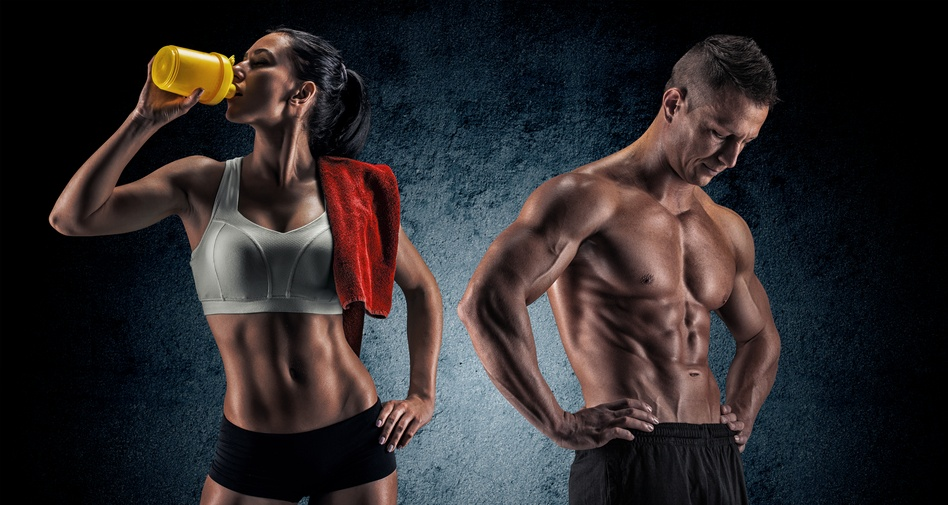
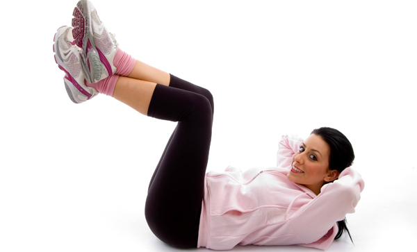

Smoothies
How To Lose Weight Fast
So you want to get in shape, but you have no gym membership and don’t know what to
do.That’s fine, you don’t need one to get in great shape! You can work out anywhere, like in the photo
below, doing push-ups on a cliff in South Africa. Because why not!

At Home:
1-Belly
Fat:
Are you
finding it difficult to fit into your little
black number? Is belly fat giving you sleepless nights? If your answer is yes, you need to make some
lifestyle changes to get the figure of your dreams. No doubt, belly fat looks aesthetically displeasing. It
can assume serious proportions and affect long term health, if not curbed at the right time. Dieting and
exercise go hand in hand. If you thought that only dieting will burn your belly fat, you are wrong. If you
really want to lose weight, you need to include an hour of exercise in your daily routine for targeting and
reducing belly fat. Here, we have compiled a list of 16 exercises that can help you reduce belly fat faster
than you thought it would take:
Best
Exercises To Reduce Belly Fat:
- Crunches
- Twist Crunches
- Side Crunches
- Reverse Crunches
- Vertical Leg Crunches
- Bicycle Exercise
- Lunge Twist
- Rolling Plank Exercise
- The Stomach Vacuum
- Captain's Chair
- Walking
- Running
- Jogging
- Cycling
- Swimming
1-Crunches
Nothing burns belly
fat faster than crunches, which occupy the number one position in fat-burning
exercises.
Now, it’s time that you start performing this exercise.
- Lie down flat on a mat with your knees bent and feet on the ground. Alternatively, you can also lift
your legs off the floor at a 90-degree angle. (See picture).
- Lift your hands and place them behind your head, or keep them crossed on your chest.
- Inhale deeply, and as you lift your upper torso off the floor, exhale.
- Inhale again as you get back down, and exhale as you come up.
- Do this for 10 times as a beginner.
- Repeat another two to three sets.
2-Twist Crunches
Once you get used to the regular
crunches, modify the basic crunch to get an even more effective tummy exercise.
- Lie down on the floor with your hands behind your head.
- Bend your knees as you would do in crunches, keeping your feet on the floor.
- You have to lift your upper torso while performing crunches. But, in twist crunches, you have to lift
just your right shoulder towards the left, keeping the left side of your torso on the ground.
- Again alternately, lift your left shoulder towards the right, keeping the right side of your torso on
the ground.
- Repeat 10 times.
3-Side Crunches
This is same as the twist crunch
exercise. The only difference is that you need to tilt your legs to the same side simultaneously with your
shoulders. The side crunch focuses on the muscles on your sides.
Make
sure you keep your movements steady and slow. The midsection, being a complex area, could hurt if you
perform the twists in a hurried fashion.
4-Reverse Crunches
Now it’s time to do reverse
crunches. This is another good exercise to reduce belly fat.
This is similar to the twist crunch exercise. The only thing that you need to do is tilt your legs behind
simultaneously with your shoulders. The side crunch focuses on the muscles on your sides.
Keep
your back straight while performing the exercise, as arching it can result in pain, and in some cases, even
injury.
5-Vertical Leg Crunches

- Lie flat on the floor, or on the mat, with your legs extended upwards (towards the ceiling) and one
knee crossed over the other.
- Now that you have positioned your body perfectly, do the same as you would have done in the case of
crunches. That is, breathe in and lift your upper body from the floor towards the pelvis.
- Breathe out slowly. As you bring yourself down, breathe in again, and exhale as you go up.
- Do 12 to 15 reps and up to three sets.
6-Bicycle Exercise
No, you don’t need a bicycle for
this. Thinking how you can do this? We’ll tell you.
- Lie on the floor and keep your hands either by your sides or behind your head as you do in crunches.
- Lift both your legs off the ground and bend them at the knees.
- Bring your right knee close to your chest, keeping your left leg away.
- Now take your right leg away and bring your left leg close to your chest.
- Keep doing this as if you are paddling a bicycle.
7-Lunge Twist
This is a workout for beginners who
want to reduce belly fat quickly.
- Stand with your legs hip width apart. Keep your knees slightly bent.
- Lift both your hands in front of you, aligning them with your shoulders and keeping them parallel to
the ground.
- Lunge forward as shown in the picture. Take a big step forward with your right leg, and sit down as if
on a chair so that your knees make a 90-degree angle with the floor. The left leg should be positioned
backwards, supported by the toes.
- The spine should be kept straight. Don’t bend your spine forward.
- Twist your torso (just the torso, and not the legs) to the right and then to the left.
- Repeat 15 times.
8-Rolling Plank Exercise
The rolling plank trains the
muscles around your abdomen, hip, and lower back.
- Position yourself on the floor with your knees and elbows resting on the ground.
- Keep your neck aligned with your spine. Look forward.
- Lift the knees up and support your legs on the toes.
- Contract your knees and keep breathing normally.
- This is the plank pose. Stay in this posture for 30 seconds.
Now, start moving to and fro for
the next 30 seconds. This is the rolling plank exercise.
- Lie down on the floor sideways.
- Support yourself on your right elbow and right leg. Your elbow should be perpendicular to the shoulder,
and the left leg should be above the right leg, keeping them together.
- Keep your knees straight. Your hips should not be touching the ground.
- Hold this position for 30 seconds. Once you get comfortable, you may hold this for one to two minutes.
- Repeat on the other side too.
9-The Stomach Vacuum
Stomach vacuum exercises are
low-impact exercises that place greater emphasis on breathing instead of increasing your heart rate.
a.
This is similar to what we call the cat stretch pose. This is also known as the four-point,
transverse-abdominal stomach vacuum. Follow the steps mentioned below to do this exercise for reducing
belly fat:
- Go down to the ground on all fours, supporting your body on your hands and knees.
- Inhale deeply and loosen your abdomen.
- As you exhale, tighten the abdomen muscles.
- Hold this position for 15-30 seconds.
- Repeat the process.
If you
are suffering from any heart or lung ailment, it is best to avoid performing this exercise.
This
exercise must be performed only on an empty stomach, as doing otherwise might lead to indigestion.
10-Captain's Chair
All you need to do this exercise is
a chair.
- Sit on the chair with your spine straight and shoulders relaxed.
- Keep both hands beside you with your palms by the side of your hips, facing downward.
- Inhale deeply.
- As you exhale, bring both your legs upwards such that your knees are close to your chest. Hold for five
seconds. Don’t bend forward and arch your back.
- Bring down your legs slowly and repeat.
Cardio Exercises To Reduce Belly Fat:
Cardio is one of the most effective ways to burn calories and shed unwanted flab from your body. Cardio
exercises are immensely helpful in reducing belly fat. Doing cardio on a regular basis will offer you other
health benefits such as reduction of stress, an increase in your lung capacity, better sleep, and a sense
of overall well-being.
12-Walking
One of the very first
cardio exercises to reduce belly fat is walking. Surprised? Do you think it’s too simple to be effective?
Well, then you should know that walking is a great and effective way to burn away that ugly belly fat. In
fact, it is an excellent fat burner for your entire body. If you follow a healthy diet along with walking
at a steady pace for 30-45 minutes for at least four to five days every week, you will witness a gradual
decrease in your weight.
This low-impact exercise increases your metabolism as well as your heart rate. A heightened metabolic rate
will burn away calories at a faster pace, thus helping to eliminate the fat accumulated around your belly.
In fact, walking decreases the risk of injuries and is considered to be a good workout for beginners.
13-Running
You have to prevent your body from getting used to any fixed workout routine. Hence, you can switch
occasionally. Try running for a change. It is an effective way to keep your heart rate up, burn calories,
and lose belly fat.
14-Jogging
If you don’t like
running, try jogging instead. Research suggests that jogging is more effective in breaking down unwanted
fat when compared to weightlifting. This is a form of aerobic exercise that is extremely useful for
fighting obesity and staying fit.
15-Cycling
This is another
effective cardio exercise that helps you shed belly fat by burning calories. Ensure that your heart rate
goes up while you are cycling.
16-Swimming
With swimming, you get
the benefits of cardio – from losing weight to toning your body – all at the same time! The strokes you
choose should be up-tempo and strenuous in order to help you burn more calories. You can start by going for
a swim once or twice every week.

2-Legs and
butt:
Doing leg
exercises at home is probably a lot easier than you realize. You don't need a leg press machine, or a stair
climber, or a squat bar to fire up those lower-body muscles. All you need is your bodyweight, maybe a
chair, and the motivation to put some burn in your quads, hamstrings, glutes, calves, and inner thighs. Oh,
and this list of 13 no-equipment leg exercises that you can do anywhere, anytime.
It probably comes as no surprise that having strong legs can take you far. Even if you're not training for
a race or working toward any other specific athletic goal, you need legs that are strong enough to
literally carry you through life. Everything from walking up a flight of stairs to lifting your heavy
laundry bag is easier when you can put some leg muscle behind it. Luckily, effective leg exercises don't
have to be complicated, and they don't even require a gym membership. There are plenty of bodyweight leg
exercises you can add to your workout routine to get stronger—and work toward any bigger strength and
performance goals you may have, too.
"Bodyweight exercises are realistic and functional, meaning that they help us strengthen our muscles that
we use in our daily lives," Jess Sims, a NASM-certified personal trainer at the Fhitting Room and Shadowbox
in New York City, tells SELF. "For example, when we squat, we are essentially sitting down into an
imaginary chair, which will help improve our posture when we actually sit in a chair. When we stand up from
a squat, we drive through our heels and brace our core—we are essentially building great habits that
translate into our lives outside the gym."
Bodyweight leg exercises are also valuable for learning proper form before you add weights to certain
moves. "We shouldn’t be using weights until we’ve mastered basic lunge, hinge, and squat movements without
weights," Sims says. Another bonus of bodyweight moves? "You have your body all the time and it’s free to
use, so you can do exercises anywhere and at anytime!" The best leg workouts are the ones you'll actually
do, right? So if you've got an arsenal of moves that you can literally do anywhere, there's a better chance
you'll fit them into your routine.
The bodyweight leg exercises below will help you build strength while also prepping your body to do more
complex moves with weights. Give them a try, and embrace the burn.
Best
Exercises To Perfect Legs And Back::
- Bodyweight Squats
- Reverse Lunges With Knee Lifts
- Plié Squat Calf Raises
- Squat Jumps
- High Knee Toe Taps
- Side Lunges
- Single-Leg Calf Raises
- Curtsy Lunges
- Pistol Squats
- Side Leg Raises
- Inner Thigh Leg Raises
- Single-Leg Glute Brides
- Inverted Inner Thigh Openers

1-Bodyweight Squats:
- Stand with your feet about shoulder-width apart and slightly turned out with your weight in your heels.
- Hinge forward at your hips and sit your butt back into a squat. Bend your knees until your thighs are
parallel to the ground.
- Drive through your heels to stand back up straight. Squeeze your butt and keep your core tight as you
stand.

2-Reverse Lunges With Knee Lifts:
- Start standing with your feet about shoulder-width apart.
- Step backwards with your left foot, landing on the ball of your foot and bending both knees to create
two 90-degree angles.
- Push through your right heel to return to standing. As you stand up, thrust your left knee toward your
chest.
- Repeat on the other side.

3-Plié Squat Calf Raises
- Stand with feet wider than shoulder-width apart, toes turned out, and hands on hips or in front of your
chest.
- Squat until your thighs are parallel to floor.
- While staying in a squat, lift both heels off the ground and hold for two seconds.
- Lower heels back down.

4-Squat Jumps
- Stand with your feet slightly wider than hip-width apart.
- Hinge forward at your hips and sit your butt back into a squat. Bend your knees until your thighs are
parallel to the ground.
- Jump up into the air as high as you can and straighten out your legs. Swing your arms down by your
sides for momentum, and keep your back straight and chest lifted.
- Land back on the floor with soft knees. Go directly into another squat.

5-High Knee Toe Taps
- Stand facing a bench or box (or a chair if that's all you have), hands on hips or by your sides.
- Tap your left foot on the bench, then swap legs and tap your right foot, quickly alternating sides.
- Keep your back straight and chest lifted the entire time.

6-Side Lunges
- Stand with your feet hip-width apart.
- Take a big step out to your right. Bend your right knee and push your butt back, keeping your left leg
straight. Keep your chest lifted and core tight.
- Repeat on the other side.

7-Single-Leg Calf Raises
- Stand with your feet hip-width apart.
- Raise your left knee to hip level, toes pointed, hands on hips or behind your head (whatever keeps you
stable).
- Keep your core tight as you lift your right heel as high as you can off the floor, balancing on the
ball of your foot.
- Hold for three seconds, then lower the heel back down.
- Repeat on the other side.

8-Curtsy Lunges
- Stand tall with your feet hip-width apart.
- Step your right leg diagonally behind your left leg and bend your knees to lower into a lunge.
- Push through your right heel to stand, and bring your right leg back to start.
- Repeat on the other side.
9-Pistol Squats

- Stand with your feet together.
- Lift your left leg a few inches and extend it forward, foot flexed.
- Bend your right knee, hinge forward at the hips, and sit back into a squat, while lifting your left leg
to hip height.Extend your arms out for balance.
- Try to bend your knee to 90 degrees if you can. (These are super difficult, so don't be discouraged if
you can't at first.)
- Push through your right heel to straighten your leg and return to start.
- Repeat on the other leg.
10-Side Leg Raises

- Lie on one side with legs out straight and stacked on top of each other. Prop your torso up with your
forearm (as shown) or rest your torso flat on the mat.
- Lift your top leg toward the ceiling in a slow and controlled movement. Make sure to lift from the hip
and butt, not your lower back.
- Return to start.
- Repeat on the other side.
11-Inner Thigh Leg Raises

- Lie on one side with legs out straight and stacked on top of each other and your torso flat on the mat
or propped up on your forearm.
- Cross your top leg over the bottom leg, bending at the knee, so that your top foot is in front of your
bottom knee.
- Lift your bottom leg toward the ceiling in a slow and controlled movement. Keep your torso stable
throughout.
- Return to start.
- Repeat on the other side.
12-Single-Leg Glute Brides

- Lie on your back with your knees bent and feet flat on the floor.
- Lift your right leg and straighten out your knee. Keep your thighs parallel to each other. Point your
toe toward the ceiling.
- Push through your heels to lift your hips up while squeezing your glutes. Try to create one diagonal
line from your shoulders to your knees.
- Pause for one to two seconds, then lower back down.
- Repeat with the opposite leg.

13-Inverted Inner Thigh Openers
- Lie on your back with your knees bent and feet flat on the floor. Lift your right leg up, keeping your
thighs touching, and extend your leg up toward the ceiling.
- Slowly lower your right leg out to the right side as far as you can while keeping your hips and lower
back glued to the floor.
- Bring your leg back to start.
- Repeat on the other leg.
At The Gym:

If you're a woman just starting out in the gym, you may be feeling intimidated. Not only is the array of
machines overwhelming, but most gyms are replete with muscular men who look like they'll crush anything in
their way—including you.
If this describes how you feel, you're not alone; many women can identify. But if you're willing to take a
tiny step beyond your comfort barrier, you'll be on the road to some fantastic fitness progress.
Let's review some of the key points you need to know to design a machine workout that will get you started
on a weightlifting regimen.
1-Barbell Hip Bridge:
This exercise benefits... glutes
A) Sit on the floor with a bench behind you and a weighted barbell over your legs. Roll the bar so it’s directly over your hips and lean back so your shoulder blades rest on the bench.
B) Drive through your feet, pushing up your hips (shoulders and feet supporting you). Squeezing your glutes, extend as high as possible. Hold for 5 secs then slowly lower. Do 20 reps.
2. DEADBUG:
This exercise benefits... abs
A) Lie on your back with your arms skywards and legs raised and bent at 90 degrees.
B) Slowly lower your arms behind you as you extend your left leg out in front on the exhale, then gently return to the starting position and repeat, this time extending the right leg. Lower the weight if your back arches off the floor. To take it up a notch, hold a 6kg dumbbell. Do 10 per leg.
3. FORWARD AND BACKWARD LUNGE:
This exercise benefits... glutes, quads, hamstrings
A) Stand holding a dumbbell in each hand, then step forwards into a lunge on your left leg. Hold for 3 secs, then push off your left leg to return to the starting position.
B) Repeat but step behind into a backwards lunge. That’s one rep. Do 10 reps per leg.
4. RENEGADE ROW:
This exercise benefits... abs, shoulders
A) With a dumbbell in each hand, start in a plank position, keeping your pelvis as stable as possible. Row your right arm back without twisting your shoulders, keeping your elbows tucked in to engage your lats. End with your dust by tier hip, then lower the dumbbell back to the floor.
B) Repeat on the other side, then do a press-up. Do 10 reps.
5. ROMANIAN DEADLIFT
This exercise benefits... core, hamstrings
A) Holding a barbell in your hands, keep your knees slightly bent, your back straight and your core embraced.
B) Hinge forwards at the hips, keeping your arms straight so the barbell is directly in front of your legs. Hold for 3 secs then return to the starting position. Do 10 reps per leg.

6. FLOOR PRESS:
This exercise benefits... shoulders, triceps
A) Lying on your back, holding two dumbbells in each hand in front of your shoulders. Tuck your pelvis under and keep your core tight.
B) Push the dumbbells overhead, holding your wrists strong. Then reverse to the starting position. Do 10 reps.

7. GOBLET SQUAT:
This exercise benefits... Hip flexors, quads, lats, calves, glutes, hamstrings
A) Stand with your feet hip-width apart and hold your dumbbells together in front of your chest, elbows down.
B) Push your hips back and bend your knees to lower into a squat, elbows brushing the insides of your knees. Hold for 3 secs then push yourself back up. That’s one rep. Do 20 reps.
8. FLOOR DUMBBELL RUSSIAN TWIST:
This exercise benefits... core, abs
A) Sit on the floor with your ankles together. Hold a dumbbell with both hands. Twist your arms to one side, clasping the dumbbell firmly.
B) Hold the dumbbell so you are nearly touching the floor. Embrace your core and do the same on the other side. Do 10 reps.
+You may also
want to to read:
Subscribe To This Challenge To My Blog!
<< Previous Next >>